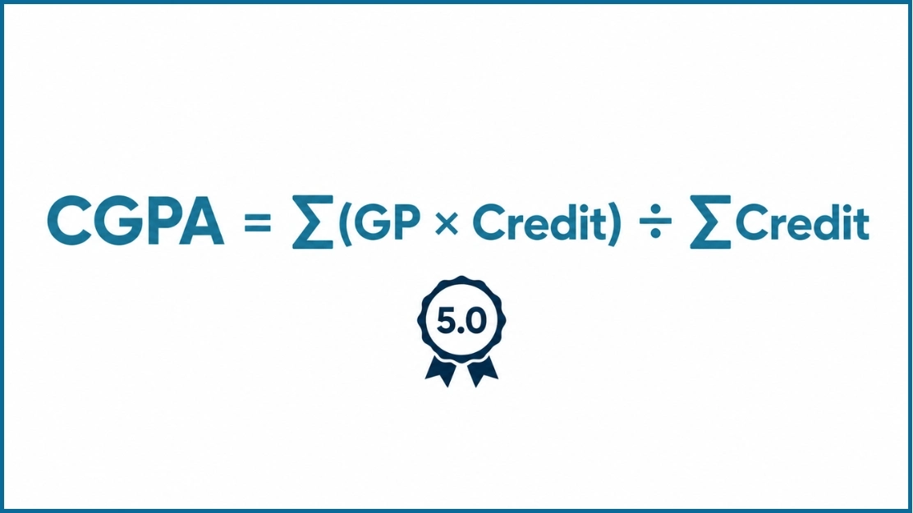

CGPA Calculator Nigeria for Semester GPA on the 5.0 Scale
Nigeria CGPA Calculator
Target CGPA Planner
SGPA to CGPA Calculator
What Is a Nigeria CGPA Calculator?
A Nigeria CGPA calculator works out your Cumulative Grade Point Average on the 5.0 scale used by Nigerian universities. You enter each course with its credit unit and grade, and the tool returns your semester GPA (SGPA) and your overall CGPA. It also shows the GPA you need in your remaining credit units to reach a target CGPA, and it converts a list of SGPAs into a CGPA.
The calculator is built for university results on the 5.0 scale. Polytechnic ND and HND results use a different 4.0 scale, so they need a different tool.
How to Use the Nigerian CGPA Calculator
Step 1. In the first semester box, type the course name or code, the credit unit and the grade for each course. Use the same spelling every time you enter a course.
Step 2. Click Add Semester for each new semester. Every semester box shows its own SGPA.
Step 3. Read your overall CGPA in the Overall CGPA panel. It updates each time you change a grade or credit unit.
Step 4. To plan ahead, open the Target CGPA Planner. Your current CGPA and completed credits fill in automatically. Add your target and the credit units you still have left.
Step 5. If you only have semester results, use the SGPA to CGPA section and enter each SGPA with its credit units. Click Download Report to save your results as a file you can open and print.
What Is CGPA in Nigeria?
CGPA stands for Cumulative Grade Point Average. It is the credit-weighted average of your grade points across every semester you have completed. Your CGPA changes each time new results are added, and it decides your final class of degree.
Nigerian result sheets use a few short terms. A course's credit unit (CU) is its weight. Grade point (GP) is the number tied to your letter grade. Total Credit Units (TCU) and Total Quality Points (TQP) are the two totals behind every GPA and CGPA. A GPA covers one semester, while a CGPA covers all of them. For a longer explanation, read what CGPA means and the difference between CGPA and GPA.
Nigerian 5.0 Grading System and Grade Points
Most Nigerian universities convert a course score into a letter grade, and each letter carries a grade point from 0 to 5. The usual boundaries are below.
| Letter Grade | Score (%) | Grade Point |
|---|---|---|
| A | 70 - 100 | 5.00 |
| B | 60 - 69 | 4.00 |
| C | 50 - 59 | 3.00 |
| D | 45 - 49 | 2.00 |
| E | 40 - 44 | 1.00 |
| F | Below 40 | 0.00 |
Some universities set a different lowest pass mark or score range for an E, so confirm the boundaries in your institution's grading regulations. Polytechnics and monotechnics generally use a 4.0 scale, which this calculator does not cover.
Nigerian CGPA Formula

Start with the quality points for each course:
Add the quality points of all courses to get TQP, and add the credit units to get TCU. Then divide:
For a semester GPA, use only that semester's courses. For CGPA, use the totals from all semesters together. A 3-unit course with an A gives 5 × 3 = 15 quality points, and a 3-unit course with a C gives 3 × 3 = 9. Courses with more credit units move your result further. See the full guide on how to calculate CGPA for other grading scales.
CGPA Calculation Examples
One semester (GPA)
| Course | Credit Unit | Grade | Grade Point | Quality Point |
|---|---|---|---|---|
| GST 111 | 2 | A | 5 | 10 |
| MTH 111 | 3 | B | 4 | 12 |
| CSC 111 | 3 | A | 5 | 15 |
| PHY 111 | 2 | C | 3 | 6 |
| CHM 111 | 3 | B | 4 | 12 |
| Total | 13 | - | - | 55 |
GPA = 55 ÷ 13 = 4.23
Two semesters (CGPA)
Semester 1 has 20 credit units and 80 quality points, so its GPA is 4.00. Semester 2 has 18 credit units and 63 quality points, so its GPA is 3.50.
CGPA = (80 + 63) ÷ (20 + 18) = 143 ÷ 38 = 3.76
The plain average of 4.00 and 3.50 is 3.75, which is slightly off because the semesters carry different credit loads. CGPA always weights each semester by its credit units. The same method works for any department or university.
Target CGPA: What Do You Need to Reach First Class?
The Target CGPA Planner uses this formula:
Possible example. You have a CGPA of 4.30 over 80 completed credit units, and 40 credit units remain. To finish on 4.50, you need (4.50 × 120 - 4.30 × 80) ÷ 40 = 4.90 across those remaining units.
Not possible example. With a CGPA of 4.20 over 80 credit units and 40 left, the same target needs (540 - 336) ÷ 40 = 5.10. That is above the 5.00 maximum, so the planner shows Not Possible. A lower target would then be the realistic goal. For ways to lift your average, see how to improve your CGPA.
Carryover and Repeated Courses
An F gives 0 grade points, but the course's credit units still count in your total, so a failed course lowers your CGPA. Passing it later can raise your CGPA again.
To handle a repeat in this calculator, add the course again in a new row with exactly the same course name or code and enter the new grade. When names match, the overall CGPA counts only the best grade for that course, and the other attempt is dimmed. Semester SGPA is not changed by this.
Universities differ on repeats. Some replace the old grade with the new one, while others keep every attempt on the record. If your university keeps both, your official CGPA will be lower than the figure here.
Nigerian Degree Classification Based on CGPA
Nigerian universities award the class of degree from the final CGPA. These are the bands in common use.
| Class of Degree | Typical CGPA Range |
|---|---|
| First Class Honours | 4.50 - 5.00 |
| Second Class Honours (Upper Division) | 3.50 - 4.49 |
| Second Class Honours (Lower Division) | 2.40 - 3.49 |
| Third Class Honours | 1.50 - 2.39 |
| Pass | 1.00 - 1.49 |
The label shown beside your CGPA in the calculator is a performance label, not an official class: Excellent (4.50 and above), Very Good (3.50 to 4.49), Good (3.00 to 3.49), Average (2.00 to 2.99), Pass (1.00 to 1.99) and Fail (below 1.00). Use the table above to find your class, and confirm the exact bands with your university.
Why Your Portal CGPA May Differ From the Calculator
The calculator rounds to two decimal places. Some portals truncate instead, so a result like 4.4987 can show as 4.49 there and 4.50 here. Other causes are different score boundaries, a different rule for repeated courses, and a wrong credit unit or grade entered by mistake. Compare your total credit units and total quality points with the portal's totals, and the gap usually shows up in one of them. If you plan to apply abroad, use the GPA converter for an estimate, and remember that foreign universities publish their own Nigerian CGPA equivalents.
Nigerian Universities That Use the 5.0 CGPA Scale
These federal, state and private universities grade on a 5.0 scale, so this calculator applies to their results. The list is not complete, and each school's own regulations have the final say.
What This Nigeria CGPA Calculator Includes
Instant Results
Your SGPA and CGPA update as you type each grade, with no manual arithmetic.
Target CGPA Planner
Enter a target and your remaining credit units to see the GPA you need, or whether the target is out of reach.
Multiple Semesters
Add a box for each semester. Every semester shows its own SGPA, and the overall CGPA covers them all.
Repeated Courses
Enter a retake under the same course name and only the best grade counts toward your overall CGPA.
Downloadable Report
Save your courses, SGPAs and CGPA as a report file you can open and print.
Free and Mobile Friendly
Works on phones, tablets and computers with no account or registration.
Where Your CGPA Counts in Nigeria
These are general patterns, not official policy. Confirm current requirements with the school, employer or scholarship body. For more detail, see CGPA and jobs and CGPA requirements for scholarships.
Nigeria CGPA Calculator FAQ
Multiply each course's grade point by its credit unit to get quality points. Add up the quality points for all courses (TQP), add up the credit units (TCU), then divide: CGPA = TQP ÷ TCU. For example, 143 quality points over 38 credit units gives a CGPA of 3.76. You can also enter your courses in the calculator above and it does the arithmetic.
The highest CGPA is 5.00 on the 5.0 scale. You reach it only when every course earns an A, which is usually a score of 70 to 100.
A CGPA of 4.50 to 5.00 is First Class Honours at most Nigerian universities. Second Class Upper starts at 3.50, Second Class Lower at 2.40, Third Class at 1.50 and Pass at 1.00. Confirm the bands in your university's handbook.
A CGPA from 3.50 upward (Second Class Upper or better) is generally treated as strong, and 4.50 and above is First Class. What counts as good also depends on the programme, because some postgraduate courses and employers set their own minimums.
GPA covers a single semester, while CGPA covers every semester completed so far. Many Nigerian result sheets show both. This calculator calls the semester figure SGPA.
Yes. An F earns 0 grade points, but its credit units still count in the total, which pulls your average down. If you pass the course later, many universities use the new result in place of the F, though policies differ, so check your handbook.
Add the course again as a new row with exactly the same course name or code, then enter the new grade. When the names match, the overall CGPA counts only the best grade for that course and dims the other attempt. Semester SGPA is not affected. If your university keeps both attempts in its CGPA, your portal figure can be lower than this result.
Only when every semester had the same total credit units. Otherwise CGPA is weighted by credit units. Divide total quality points by total credit units, or enter each semester's SGPA together with its credit units in the SGPA to CGPA section.
No. This calculator uses the 5.0 university scale. Polytechnics and monotechnics generally grade on a 4.0 scale, so a 5.0 calculation would not match your result.
Most Nigerian universities do, but details differ in places, such as the lowest pass mark or the score range for an E. Check your university's grading regulations before relying on a final figure.
Common causes are a portal that truncates instead of rounding to two decimals, different score boundaries, a different rule for repeated courses, or a credit unit or grade entered wrongly. Compare your total credit units and total quality points with the portal's totals to find the gap.
Many programmes ask for at least Second Class Lower (2.40), and competitive ones prefer Second Class Upper (3.50) or higher. Graduates with lower classes sometimes need a postgraduate diploma first. Check each school's admission requirements.
It shows your CGPA with an overall label (Excellent, Very Good, Good, Average, Pass or Fail). These are performance labels, not official degree classes. Match your CGPA to the classification table on this page, then confirm with your university.
Yes. It is free to use as often as you like, with no account or sign-up.
Related CGPA Guides
How to Calculate CGPA
Step-by-step CGPA calculation with worked examples for different grading scales.
Read guide → →CGPA vs GPA
See how semester GPA and cumulative CGPA differ, with the formula and real examples.
Read guide → →How to Improve Your CGPA
Ten strategies with the math behind each one, so you can see what a better grade does to your average.
Read guide →